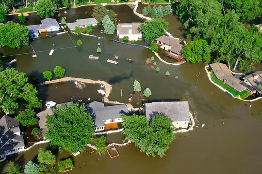
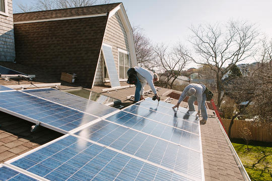

EXPLAINER
EXPLAINER
Are the Effects of Global Warming Really that Bad?
Short answer: Yes. Even a seemingly slight average temperature rise is enough to cause a dramatic transformation of our planet

EXPLAINER
EXPLAINER
How You Can Stop Global Warming
Healing the planet starts at home - in your garage, in your kitchen, and at your dining-room table.

PERSONAL ACTION
5 Ways City Dwellers Can Spur Climate Action
What is your city doing about climate change? Ask your local leaders these five questions.